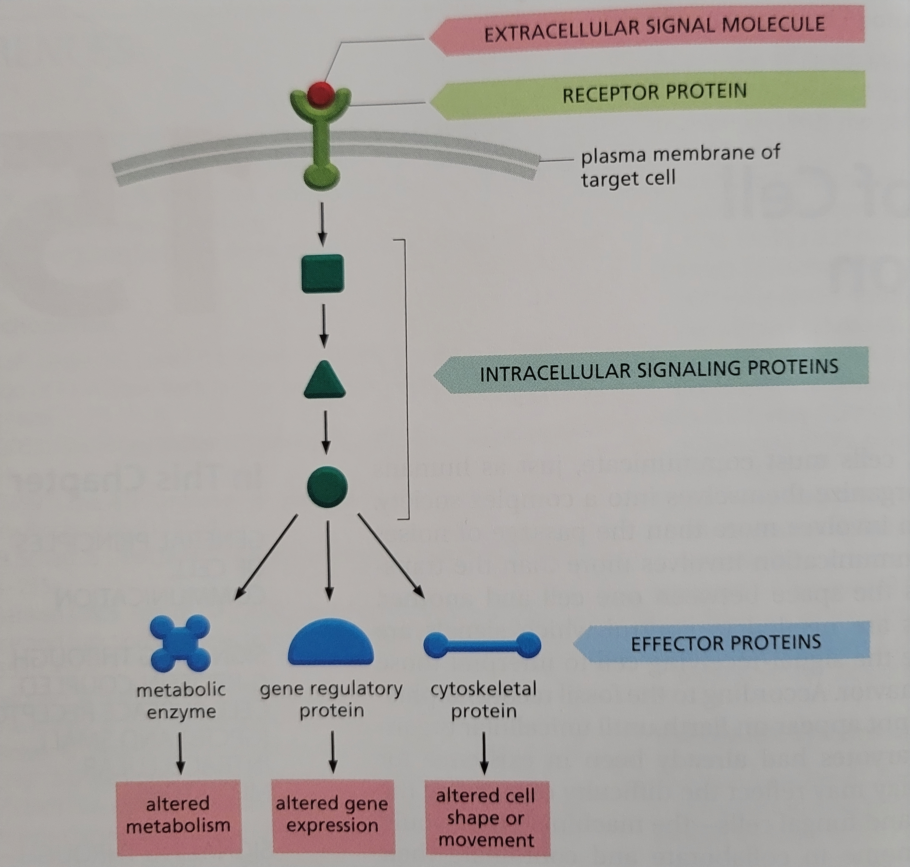
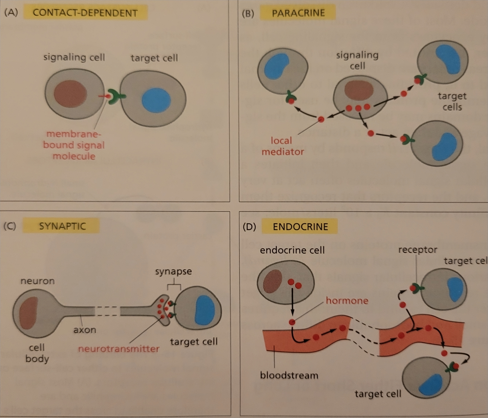
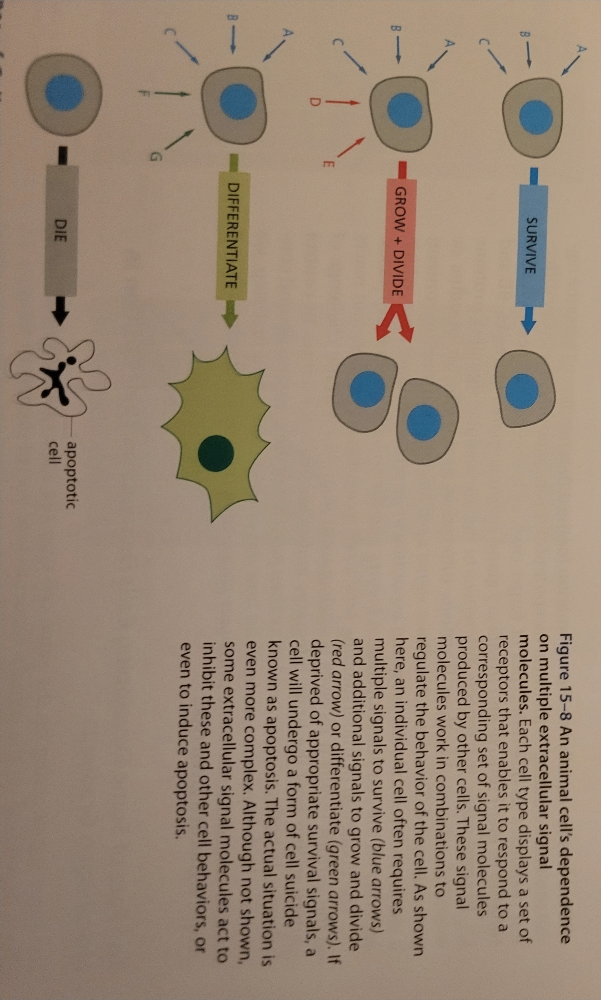
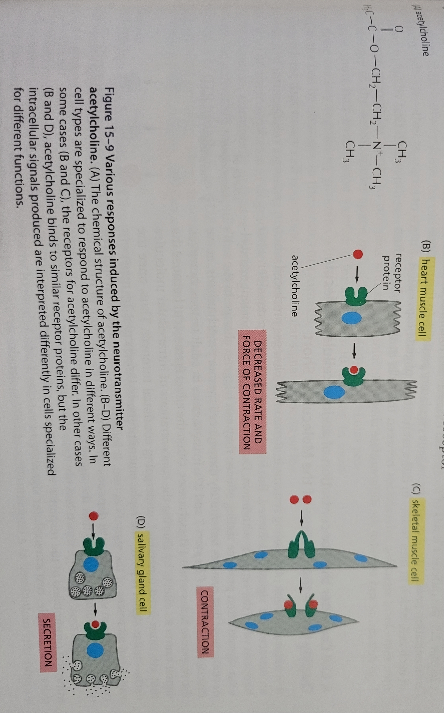
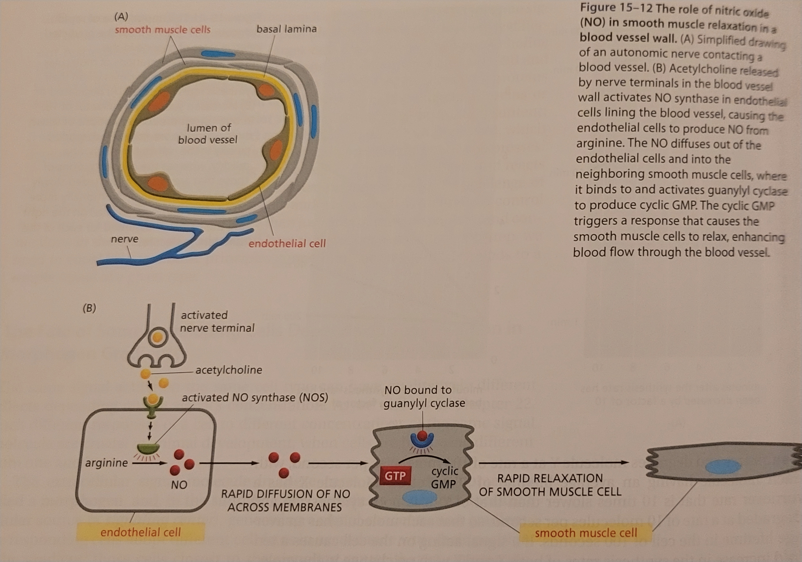
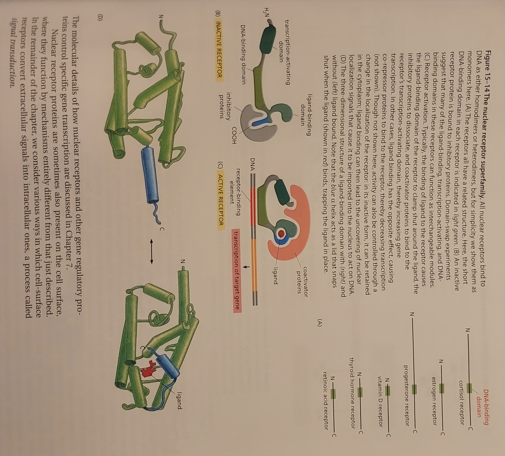
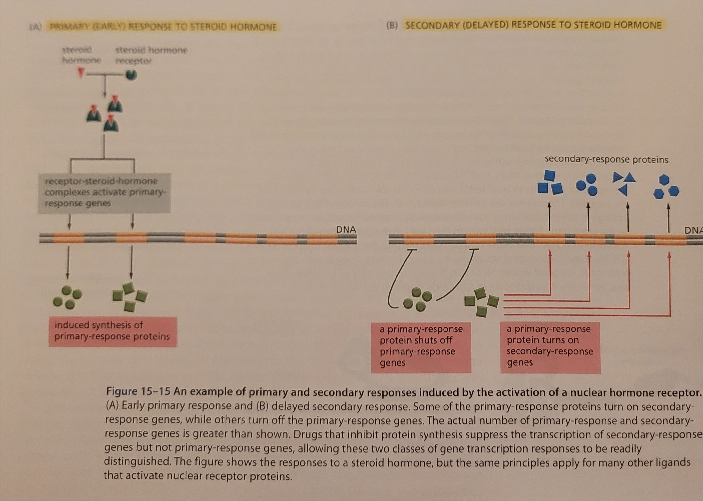
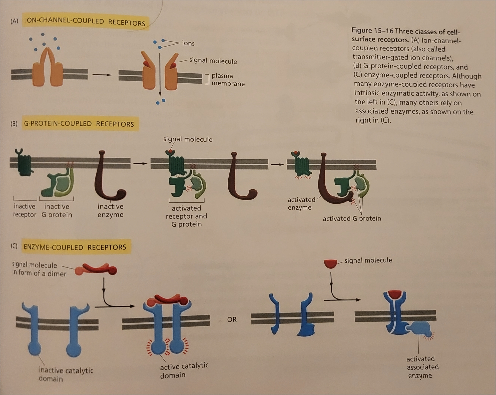
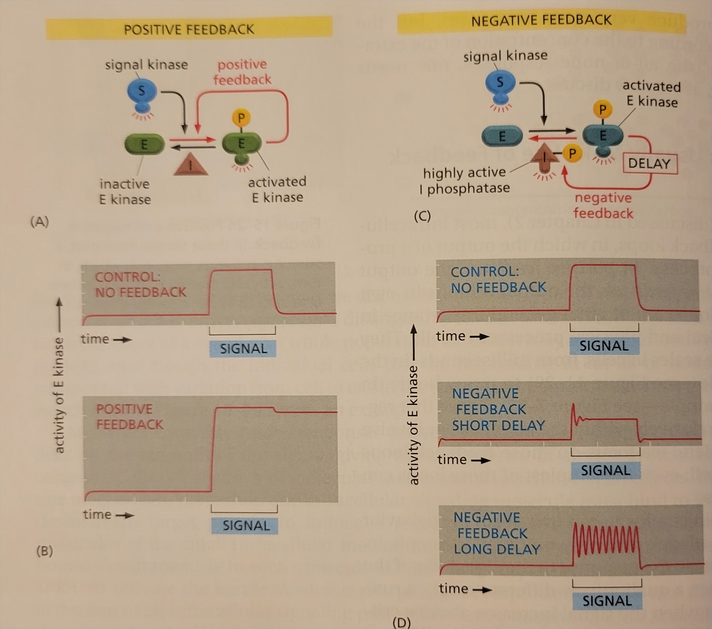
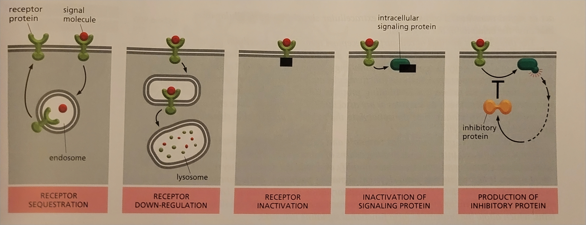

Lesson 10: Cell Signaling
Mechanisms of Cell Communication
Intercellular signals are signals sent from one cell to another. Intracellular signals are those that occur within a single cell.
 From figure 15-1 we can see that intracellular signalling starts with a receptor protein that recieves a signal from a extracellular signal molecule and end with an alteration to the cell catalyzed by a effector protein with intracellular signaling proteins acting as a mediating step.
Receptor proteins are usually bond to the cell membrane of the target cell.
General Principles…
Quorum sensing is when cells respond to chemical signals that are secreted by their neighbors and increase in concentration with an increase in population density.
There are over 1500 human gene that encode for receptor proteins.
Extracellular Signal Molecules…
Animal cell signal molecules can be: proteins, small peptides, amino acids, nucleotides, steroids, retinoids, fatty acids derivatives, and dissolved gases.
The most common ways for signal molecules to be transmitted are exocytosis, diffusion across the cell membrane, and transmembrane proteins on the signaling cell’s membrane.
The affinity for a signal molecule to it’s receptor is high (K \(\ge\) 10\(^8\) liters/mole).
An extracellular signal molecule is called a ligand. Most ligands bind to a receptor on the outside of the cell membrane but some bind to receptors inside the cell. In order for this to work the ligand must be sufficiently small and hydrophobic enough for it to diffuse across the membrane.

The spatial or temporal extent of a paracrine signal can be restricted via rapid uptake by neighboring target cells, destruction by extracellular enzymes, immobilization by the extracellular matrix, or screted protein antagonists.
Heparin sulfate proteoglycans found either in the extracellular matrix or on the membrane of a cell often play a role in the localiztion of signaling proteins. The do this using extra long polysaccharides side chains that bind to the signal protein.
In the case of neurotransmitters, the binding affinity of the transmitter to it receptor is low so that it can dissociate from the receptor quickly to rapidly terminate a response. Neurotransmitters are quickly removed from the synaptic cleft via hydrolytic enzymes that destroy the transmitters or membrane transport proteins that pump them back to the nerve terminal or neighboring glial cells.
Tthe binding affinity of hormones to their receptors is higher than the binding affinity of neurotransmitters to their receptors.

Each Cell is Programmed…
When it is said that a cell differentiates it means that the cell is changing which genes it is expressing to become a more specific cell.
Apoptosis is programmed cell death that can by the cell being deprived of it’s required signals.

Figure 15-9

A single signal molecule contains little information thus it can act as a signal for multiple cells to induce different responses because the receptors on each cell can intiate a protein cascade unique to that cell. From this we can assume the signal molecule evloved before the receptors.
A Cell Can Alter…
The time required for a molecule to shift halfway from its old to a new equalibirum is its half-life.
Figure 15-12

NO is the gas nitric oxide. Since NO is a gas it can easily diffuse across the cell membrane.
Nuclear Receptors are Ligand-Modulated…
The four kinds of hydrophobic signal molecules mentioned in the text that bind to receptors that control gene transcription are thyroid hormones, retinoids, steriod hormones, and Vitamin D.
An orphan nuclear receptor is a receptor where the DNA sequence has been identified for the receptor but not its related ligand.
In order to travel through the bloodstream without aggregating via their hydrophobic regions, steroids bind to specific carrier proteins.
Nuclear receptors can be found in the cytosol or bound to DNA in the nucleus when not bond to a ligand. IN both cases inhibitory protein complexes prevent nuclear receptor activity in the absence of ligand.
 The same ligand and nuclear receptor can cause different effects in different cell types because each cell has a combination of ohter cell-type-specific gene regulatory proteins that collaborate with the active receptor.

Negative feedback can regulate the expression of primary response genes by some of the proteins produced in the primary response acting back to inhibit the transcription of the primary response gene.
The Three Largest Classes…
The three classes of cell-surface receptor proteins are: ion-channel-coupled, G-protein-coupled, and enzyme-coupled.

These cell-surface receptors act as signal transducers by converting an extracellular ligand-binding event into intracellular signals that alter the behavior of the target cell.
Most Activated Cell-Surface Receptors…
The small intracellular signaling molecules are called small intracellular mediators, or second messengers.
 ## Figure 15-18
## Figure 15-18

Many Intracellular Signaling Proteins…
30% of proteins in a cell are phosphorylated at any given moment.
There are about 520 kinases and 150 phosphatase genes are in the human genome.
A phosphorylation cascade is when one kinase is activated by phosphorylation and in turn phosphorylates the next kinase in a sequence and so on, relaying the signal onward in the process.
The two families of kinases are serine and threonine kinases.
The two types of G-proteins are trimeric GTP-binding proteins and monomeric GTPases.
An RGS protein is a regulator of G-protein signaling protein.
A coincidence detector protein is a protein that only activates after recieving multiple signals.
Phosphorylation always turns on a protein.
Modular Interaction Domains
The function of interaction domains is to bind to a particular structural motiff in a protein or lipid molecule with which the signal protein interacts.
A highly conserved domain is a domain that is consistenly reoccuring in molecular evolution.
The 4 examples of interaction domains are Src homology 2 (SH2), phosphotyrosine-binding domains (PTB), Src homology 3 (SH3), and pleckstrin homology (PH).
Binding:
SH2 and PTB bind to phosphorylated tyrosines in a particular peptide sequences on activated receptors or intracellular signaling proteins.
SH3 binds to short proline-rich amino acid sequences.
PH binds to the charged head groups of phosphoimositides that are produced in the plasma membrane in response to an extracellular signal.
Adaptor proteins are signal proteins that link two other proteins in a signal pathway.
Intracellular Signaling Networks
Positive feedback loops lead to self-sustaining activation by constantly adding to the activation of the signal pathway.

Figure 15-29
